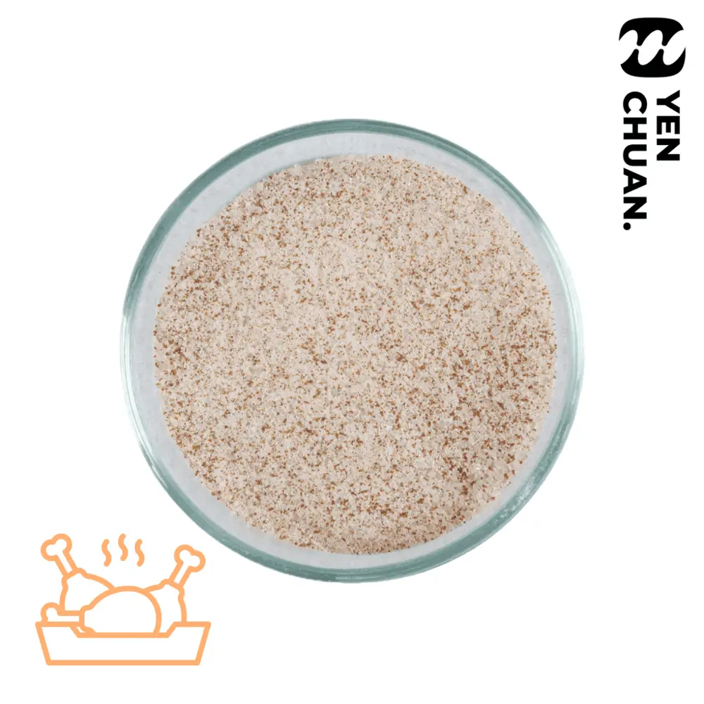

Fried chicken marinate powder
Fried chicken is the undisputed king of the Taiwan night market, use our marinate powder to give your chicken that authentic spice!
Preview only: no inquiry is sent here. Wholesale prices, MOQ, lead time and shipping require confirmation by Yen Chuan.
Details
Unit size: 5kg
Units per carton: 4
Storage conditions: Room temperature
MOQ: 5 cartons
For frying chicken breast/thighs (1kg):
- Add 54g powder into a freezer-friendly container
- Add 150ml water and mix until fully dissolved
- Add the chicken pieces to the container, cover the chicken with the marinade
- Store in a fridge to marinate (6-12 hours)
- Once finished, coat the marinated chicken with fry batter and fry
- Enjoy!
To make fried chicken wings, small drumsticks or smaller pieces:
Use 50g marinate powder with 60g water instead
For best results, season the fried chicken with pepper salt before serving.